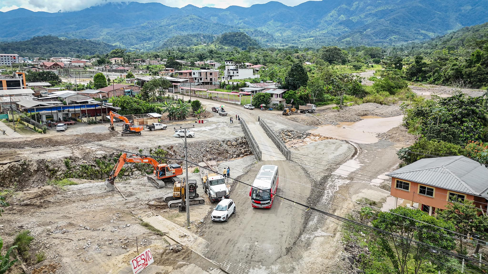
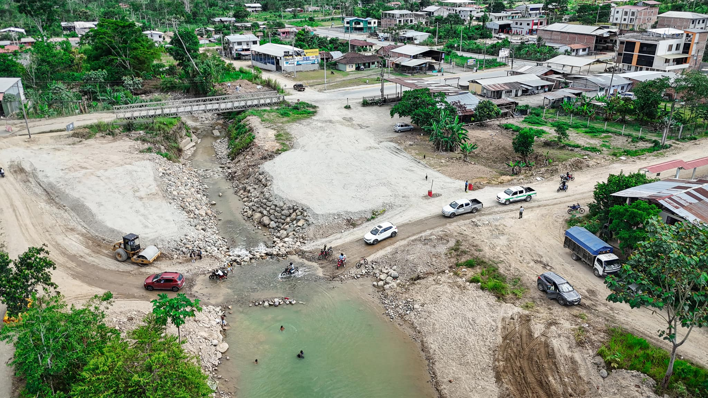

NOTICIAS EL PANGUI
Puente Bailey
El paso por el puente Bailey sobre la quebrada Cayamatza está habilitado con total normalidad. Se informa nforma que el puente Bailey ha sido reubicado exitosamente, permitiendo el tránsito regular en la zona. Esta reubicación es fundamental para dar inicio a la construcción del puente definitivo, una obra que fortalecerá la conectividad y seguridad de nuestra comunidad.
Construcción Nuevo Puente
Se informa a la ciudadanía que, con el objetivo de iniciar la construcción del nuevo puente sobre la quebrada Cayamatza, se ha implementado un desvío vial temporal en el sector. La quebrada Cayamatza se encuentra intervenida debido a los trabajos en ejecución. Por ello, hacemos un llamado a la ciudadanía a evitar ingresar a la quebrada o realizar actividades recreativas en la zona para prevenir accidentes y garantizar la seguridad de todos. Recomendamos tener especial cuidado con los niños, recordándoles el riesgo que representa esta área mientras se ejecutan los trabajos.
Prosupuesto 2025
Hoy se realizó el primer debate del Presupuesto para el año 2025 Durante esta sesión,
se abordó la planificación de los recursos necesarios para garantizar el desarrollo y bienestar de nuestro cantón.